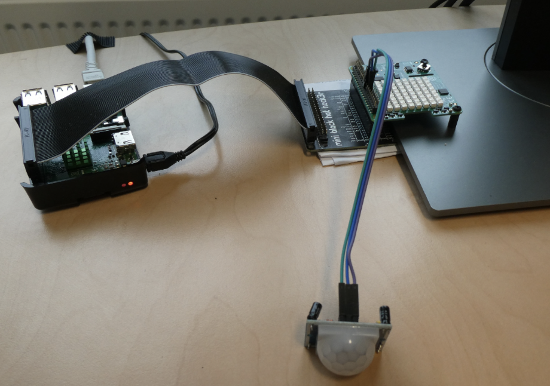
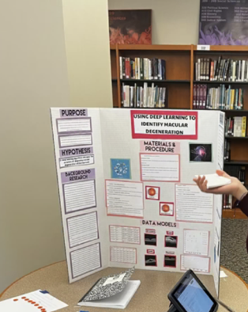

Research & Project Materials
My Gallery
A closer look at my Raspberry Pi setup and materials from my project on using deep learning to detect age-related macular degeneration.
01 / Embedded Systems
Raspberry Pi Setup

Hardware Setup
Working with Raspberry Pi
My Raspberry Pi setup with connected hardware and a sensor. Working directly with physical components has given me experience with hardware connections, troubleshooting, and the interaction between software and embedded devices.
02 / Deep Learning Project
Age-Related Macular Degeneration
A sample of my written report and the poster I created to present my project.

Written Report
Project Report Sample
An excerpt from the background section of my report on using deep learning to identify age-related macular degeneration. This section explains the role of the macula in vision and introduces the disease studied in my project.

Project Presentation
Research Poster
The poster I created to present my project, “Using Deep Learning to Identify Macular Degeneration.” It brings together the project’s purpose, background research, methods, and data models in a visual format.
Click any image to open the full-size version in a new tab.